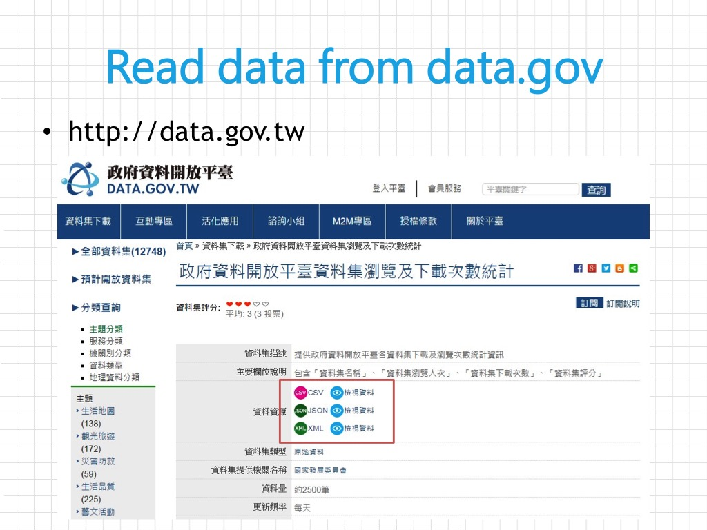
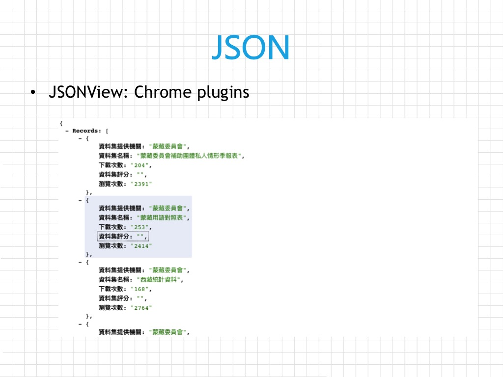
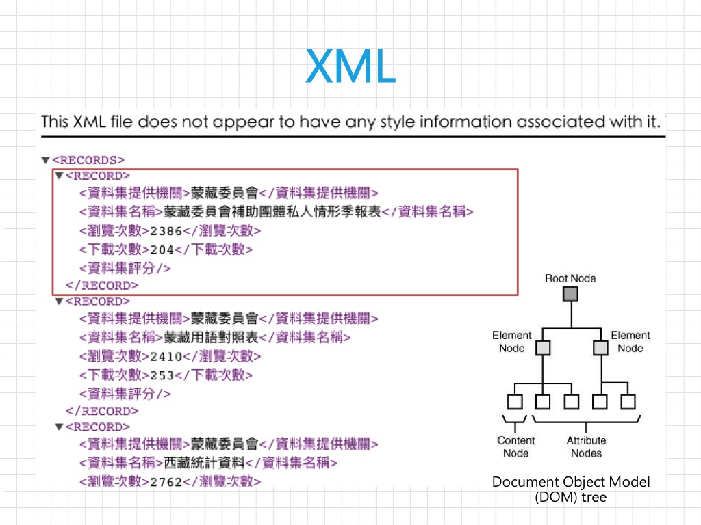

6 Data Acquisition
Rafe C. H. Liu, LastUpdate: 2018-07-17
- Data acquisition:
- Combine data from local files and different formats (txt, csv, xls, xlsx)
- Download files from website
- Accessing an API
- Scraping a web page (not included in this session, yet)
6.1 OpenData
- OpenData in Taiwan
- data.taipei
- 政府資料開放平台
- CSV(43.77%)、JSON(18.49)、XML(16.53%)，佔全部開放資料 78.79%（2018/07 統計）
- OData
- Open Data Protocol(OData)，它是一個開源的協定，藉由簡單的 URL 參數傳遞，來識別並查詢資料庫資料，此協定支援 XML 及 JSON 格式。

| STR | CLASS | TYPE.MAIN | COUNT | PERC |
|---|---|---|---|---|
| YES | Sheets | CSV | 22322 | 43.77 |
| JSON | 9429 | 18.49 | ||
| XML | 8430 | 16.53 | ||
| XLS | 929 | 1.82 | ||
| ODS | 683 | 1.34 | ||
| XLSX | 670 | 1.31 | ||
| MAPs | KML | 771 | 1.51 | |
| RSS | 669 | 1.31 | ||
| KMZ | 179 | 0.35 | ||
| SHP | 133 | 0.26 | ||
| GEOJSON | 12 | 0.02 | ||
| API | WEBSERVICES | 517 | 1.01 | |
| API | 299 | 0.59 |
6.2 From Local Files
- text format
readline(),readLines()
- table format
- read.csv
read.csv(file, header = TRUE, sep = ",", fileEncoding = "", stringsAsFactors = FALSE)
readr::read_csv(),readxl::read_xls(),readxl::read_xlsx()
- read.csv
- import from IDE
- 當已萬念俱灰

- 當已萬念俱灰
6.3 Batch Download & import
- as the local files
- read.csv(file =
URL)
- read.csv(file =
- Quiz：請從網站上批次下載檔案，並整理成一個 data.frame 以供分析使用
- DataSource
- Write your codes
- URL 有規則 => 依照規則產生不同 URL :
url <- paste(),as.Date(x = "2016/12/08") %>% format(format="%Y%m%d") - 批次自動下載:
download.file() - 批次讀取子資料夾內檔案:
list.files(),read.csv - 整理到一個 data.frame:
dplyr::bind_rows - 存成 csv 或資料庫中:
write.csv(),library(DBI)
- URL 有規則 => 依照規則產生不同 URL :
url <- 'http://tisvcloud.freeway.gov.tw/history/TDCS/M03A/M03A_20161113.tar.gz'
download.file(url, destfile = "20180701.tar.gz")
untar("20180701.tar.gz")
all.files <- list.files(path = "./var", recursive = TRUE)
dat <- csvDat <- NULL
for (i in 1:length(all.files)){
# Your CODE here
# csvDat <- read.csv(...)
# dat <- bind_rows(dat, csvDat)
# csvDat <- NULL
print(all.files[i])
}6.4 Accessing an API
- XML vs JSON
- Extensible Markup Language (XML) - 重量級的標記式語言
- JSON: The Fat-Free Alternative to XML - 輕量級的資料交換語言
- JSON vs XML
- Chrome extension: JSONView
- Ex. 空氣品質指標(AQI)
 
# (1) .csv
url <- 'https://quality.data.gov.tw/dq_download_csv.php?nid=40448&md5_url=7294c8570f28a759cc3a76a7e696e793'
y <- read.csv(url, sep = ",", stringsAsFactors = F, header = T)
## for https SSL peer verification
url <- "https://opendata.epa.gov.tw/ws/Data/AQI/?$format=csv"
library(httr)
dat <- GET(url, config = config(ssl_verifypeer = 0L))
dat <- content(dat, encoding = 'UTF8', type = "text/csv")
# (2) json files
library(jsonlite)
url <- 'http://opendata2.epa.gov.tw/AQI.json'
y <- fromJSON(url, flatten = TRUE)
y <- as.data.frame(y$Records)
# (3) XML
library(XML)
url <- 'http://opendata2.epa.gov.tw/AQI.xml'
x <- xmlParse(url) # 以 xmlParse 解析 XML 檔案
xmlfiles <- xmlRoot(x) # 將 root 設定到 content 層級（一個偷吃步的做法）
y <- xmlToDataFrame(xmlfiles) # 轉換成 dataframe
# 將整理完成的檔案存成 CSV
write.csv(file = 'open.csv', y, fileEncoding = 'big5')
Rafe C.H. Liu (劉佳欣)
Data Thinking, Machine Learning & E-commerce expert
Contact Info | Linkedin Profile
Data Thinking, Machine Learning & E-commerce expert
Contact Info | Linkedin Profile